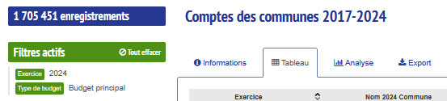
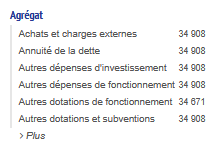
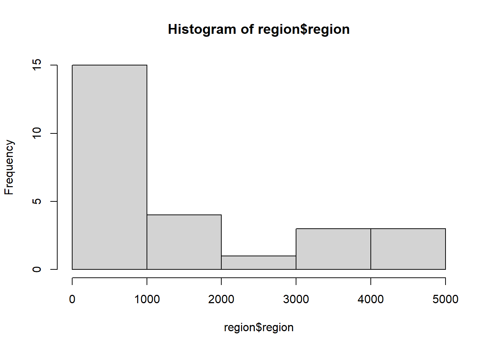
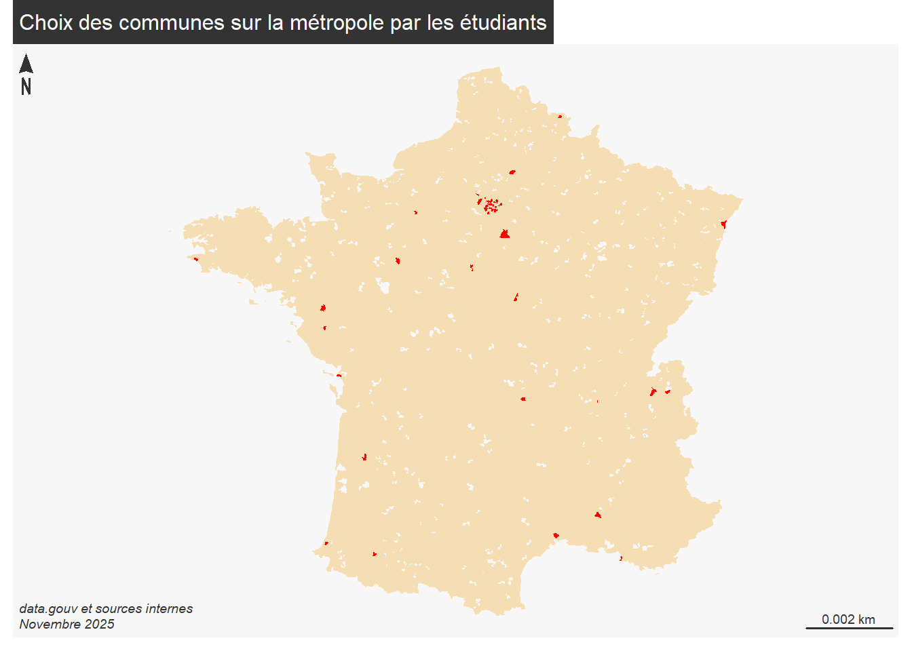
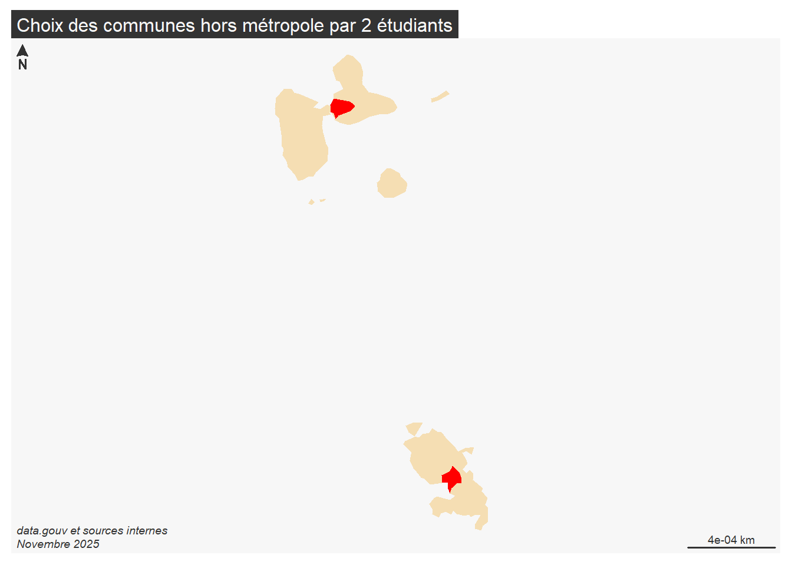
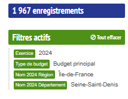
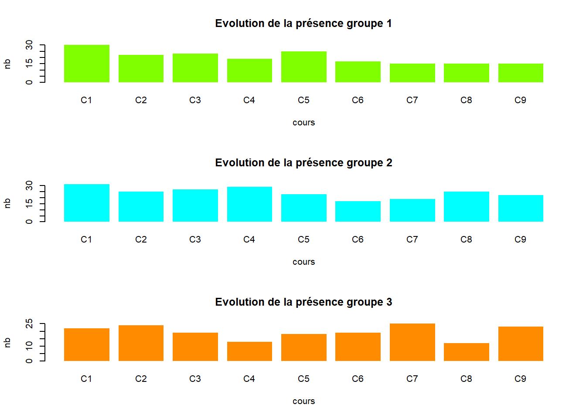
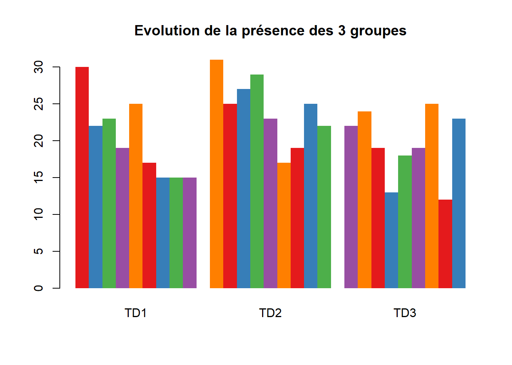

Introduction
1 Intitulé et déroulé du cours
“L5GEABIM Analyses bivariées et multivariées”
| num.cours | date | thème | outil | exercice.nb.pts |
|---|---|---|---|---|
| 1 | 15.09.25 | statistique univariée base | 1 | |
| 2 | 22.09.25 | statistique univariée indicateurs | 2 | |
| 3 | 29.09.25 | bivariée : base + régression début | 2 | |
| 4 | 06/10/25 | régression fin + khi début (tableau de contingence) | 2 | |
| 5 | 13/10/25 | khi2 | 2 | |
| 6 | 20/10/25 | initiation R | R | NA |
| NA | 27/10/25 | CONGES | NA | |
| 7 | 03/11/25 | initiation R / boite à moustaches | 1 | |
| 8 | 10/11/25 | initiation R / variance + sujet DM | NA | |
| 9 | 17/11/25 | multivariée : boucle R et mise en forme des données (part 1 – régression multiple) | NA | |
| 10 | 24/11/25 | multivariée : régression multiple (part 2) et script analyse factorielle et classification | NA | |
| 11 | 01/12/25 | multivariée : analyse factorielle et classification (données centrées réduites) | NA | |
| 12 | 08/12/25 | questions autour du devoir maison. Devoir à rendre le 12 au plus tard. | NA | |
| 13 | 15/12/25 | absence aux cours du 15/12 – série d’exercices à rendre / cours du 19/12 présentielle | NA | |
| 14 | 15/01/26 | partiel | NA |
2 La donnée
2.1 Où les trouver ?
Au départ les données sur les finances des communes
https://www.data.gouv.fr/datasets/comptes-des-communes-2017-2024/
2.2 Préparer les données
2.2.1 Des données trop nombreuses
23 millions d’observations au total, un fichier de 6 G°de données
 voir la source
originale
voir la source
originale
Portail données
2.2.2 Portail cartographie
Pour les premiers cours, il est plus facile d’utiliser l’outil proposé par l’OFGL ### Filtres
2.2.2.1 Choix de base : type de budget et année
- budget principal et 2024 (pour avoir une ligne par commune)

- choisir un ou plusieurs agrégats

2.2.2.2 Un choix géographique différent par étudiant
lieu <- read.csv("data/etudiant.csv")
lieu <- unique(lieu$code.insee.commune.choisie)
lieu <- lieu [!is.na(lieu)]
library(sf)## Linking to GEOS 3.12.1, GDAL 3.8.4, PROJ 9.3.1; sf_use_s2() is TRUE## Reading layer `communes-1000m' from data source
## `C:\Users\tachasa\01_stat\data\gros\communes-1000m.geojson'
## using driver `GeoJSON'
## Simple feature collection with 35014 features and 7 fields
## Geometry type: MULTIPOLYGON
## Dimension: XY
## Bounding box: xmin: -178.182 ymin: -85.05 xmax: 168.133 ymax: 51.089
## Geodetic CRS: WGS 84communes <- communes [st_is_valid(communes),]
region <- aggregate(communes [,c("region")], by = list(communes$region), length)
data <- communes [communes$code %in% lieu,]
table(data$departement, data$region)##
## 01 02 11 24 27 28 32 44 52 53 75 76 84 93
## 13 0 0 0 0 0 0 0 0 0 0 0 0 0 1
## 17 0 0 0 0 0 0 0 0 0 0 1 0 0 0
## 29 0 0 0 0 0 0 0 0 0 1 0 0 0 0
## 33 0 0 0 0 0 0 0 0 0 0 1 0 0 0
## 34 0 0 0 0 0 0 0 0 0 0 0 1 0 0
## 44 0 0 0 0 0 0 0 0 1 0 0 0 0 0
## 45 0 0 0 1 0 0 0 0 0 0 0 0 0 0
## 58 0 0 0 0 1 0 0 0 0 0 0 0 0 0
## 59 0 0 0 0 0 0 1 0 0 0 0 0 0 0
## 60 0 0 0 0 0 0 1 0 0 0 0 0 0 0
## 61 0 0 0 0 0 1 0 0 0 0 0 0 0 0
## 63 0 0 0 0 0 0 0 0 0 0 0 0 1 0
## 64 0 0 0 0 0 0 0 0 0 0 2 0 0 0
## 67 0 0 0 0 0 0 0 1 0 0 0 0 0 0
## 69 0 0 0 0 0 0 0 0 0 0 0 0 1 0
## 72 0 0 0 0 0 0 0 0 1 0 0 0 0 0
## 74 0 0 0 0 0 0 0 0 0 0 0 0 2 0
## 75 0 0 9 0 0 0 0 0 0 0 0 0 0 0
## 77 0 0 2 0 0 0 0 0 0 0 0 0 0 0
## 78 0 0 1 0 0 0 0 0 0 0 0 0 0 0
## 84 0 0 0 0 0 0 0 0 0 0 0 0 0 1
## 85 0 0 0 0 0 0 0 0 1 0 0 0 0 0
## 92 0 0 11 0 0 0 0 0 0 0 0 0 0 0
## 93 0 0 7 0 0 0 0 0 0 0 0 0 0 0
## 94 0 0 9 0 0 0 0 0 0 0 0 0 0 0
## 95 0 0 2 0 0 0 0 0 0 0 0 0 0 0
## 971 1 0 0 0 0 0 0 0 0 0 0 0 0 0
## 972 0 1 0 0 0 0 0 0 0 0 0 0 0 0
met <- region [region$region > 900,]
mf_map(met, col = "wheat", border = NA)
mf_map(data, col= "red", add = T, border = NA)
mf_layout("Choix des communes sur la métropole par les étudiants", "data.gouv et sources internes\nNovembre 2025")
Deux étudiants ont fait un choix hors métropole
horsMet <- data [data$departement %in% c(971,972),]
mf_init(st_buffer(horsMet,20000))
mf_map(region, col = "wheat", border = NA, add = T)
mf_map(data, col= "red", add = T, border = NA)
mf_layout("Choix des communes hors métropole par 2 étudiants", "data.gouv et sources internes\nNovembre 2025")
Enregistrement de la donnée
## Deleting layer `data' using driver `GPKG'
## Writing layer `data' to data source `data/data.gpkg' using driver `GPKG'
## Writing 64 features with 7 fields and geometry type Multi Polygon.2.2.2.3 Choix pour le cours
Le cours sera basé sur la commune de Bondy et le département du 93 (1967 enregistrements pour tous les agrégats)

A noter, sélectionner la région permet de choisir plus facilement le département 93
## [1] "Exercice"
## [2] "Outre.mer"
## [3] "Code.Insee.2024.Région"
## [4] "Nom.2024.Région"
## [5] "Code.Insee.2024.Département"
## [6] "Nom.2024.Département"
## [7] "Code.Siren.2024.EPCI"
## [8] "Nom.2024.EPCI"
## [9] "Strate.population.2024"
## [10] "Commune.rurale"
## [11] "Commune.de.montagne"
## [12] "Commune.touristique"
## [13] "Tranche.revenu.par.habitant"
## [14] "Présence.QPV"
## [15] "Code.Insee.2024.Commune"
## [16] "Nom.2024.Commune"
## [17] "Catégorie"
## [18] "Code.Siren.Collectivité"
## [19] "Code.Insee.Collectivité"
## [20] "Siret.Budget"
## [21] "Libellé.Budget"
## [22] "Type.de.budget"
## [23] "Nomenclature"
## [24] "Agrégat"
## [25] "Montant"
## [26] "Montant.en.millions"
## [27] "Population.totale"
## [28] "Montant.en...par.habitant"
## [29] "Compte.2024.Disponible"
## [30] "code_type_budget"
## [31] "ordre_analyse1_section1"
## [32] "ordre_analyse1_section2"
## [33] "ordre_analyse1_section3"
## [34] "ordre_analyse2_section1"
## [35] "ordre_analyse2_section2"
## [36] "ordre_analyse2_section3"
## [37] "ordre_analyse3_section1"
## [38] "ordre_analyse3_section2"
## [39] "ordre_analyse3_section3"
## [40] "ordre_analyse4_section1"
## [41] "annee_join"
## [42] "Population.totale.du.dernier.exercice"## Exercice Outre.mer Code.Insee.2024.Région Nom.2024.Région
## 1 2024 Non 11 Île-de-France
## 2 2024 Non 11 Île-de-France
## 3 2024 Non 11 Île-de-France
## 4 2024 Non 11 Île-de-France
## 5 2024 Non 11 Île-de-France
## 6 2024 Non 11 Île-de-France
## Code.Insee.2024.Département Nom.2024.Département Code.Siren.2024.EPCI
## 1 93 Seine-Saint-Denis 200057867
## 2 93 Seine-Saint-Denis 200058097
## 3 93 Seine-Saint-Denis 200057875
## 4 93 Seine-Saint-Denis 200058097
## 5 93 Seine-Saint-Denis 200057875
## 6 93 Seine-Saint-Denis 200057875
## Nom.2024.EPCI Strate.population.2024 Commune.rurale
## 1 Plaine Commune 9 Non
## 2 Paris Terres d'Envol 9 Non
## 3 Est Ensemble 8 Non
## 4 Paris Terres d'Envol 9 Non
## 5 Est Ensemble 9 Non
## 6 Est Ensemble 9 Non
## Commune.de.montagne Commune.touristique Tranche.revenu.par.habitant
## 1 Non Non 0
## 2 Non Non 1
## 3 Non Non 1
## 4 Non Non 1
## 5 Non Non 0
## 6 Non Non 1
## Présence.QPV Code.Insee.2024.Commune Nom.2024.Commune Catégorie
## 1 Oui 93001 Aubervilliers Commune
## 2 Oui 93005 Aulnay-sous-Bois Commune
## 3 Oui 93006 Bagnolet Commune
## 4 Oui 93007 Le Blanc-Mesnil Commune
## 5 Oui 93008 Bobigny Commune
## 6 Oui 93010 Bondy Commune
## Code.Siren.Collectivité Code.Insee.Collectivité Siret.Budget Libellé.Budget
## 1 219300019 93001 2.193000e+13 AUBERVILLIERS
## 2 219300050 93005 2.193001e+13 AULNAY-SOUS-BOIS
## 3 219300068 93006 2.193001e+13 BAGNOLET
## 4 219300076 93007 2.193001e+13 LE BLANC-MESNIL
## 5 219300084 93008 2.193001e+13 BOBIGNY
## 6 219300100 93010 2.193001e+13 BONDY
## Type.de.budget Nomenclature Agrégat Montant
## 1 Budget principal M57 Autres dotations et subventions 13679472.39
## 2 Budget principal M57 Autres dotations et subventions 4395518.56
## 3 Budget principal M57 Autres dotations et subventions 7500562.48
## 4 Budget principal M57 Autres dotations et subventions 9213778.24
## 5 Budget principal M57 Autres dotations et subventions 19974330.9
## 6 Budget principal M57 Autres dotations et subventions 4012028.83
## Montant.en.millions Population.totale Montant.en...par.habitant
## 1 13.67947239 90259 151.55798745831441
## 2 4.395518559999999 86522 50.80232264626337
## 3 7.50056248 39493 189.92131466335806
## 4 9.21377824 58396 157.78098225905885
## 5 19.974330899999998 55191 361.9128281785073
## 6 4.01202883 53067 75.60308346053102
## Compte.2024.Disponible code_type_budget ordre_analyse1_section1
## 1 1 1 NA
## 2 1 1 NA
## 3 1 1 NA
## 4 1 1 NA
## 5 1 1 NA
## 6 1 1 NA
## ordre_analyse1_section2 ordre_analyse1_section3 ordre_analyse2_section1
## 1 NA NA NA
## 2 NA NA NA
## 3 NA NA NA
## 4 NA NA NA
## 5 NA NA NA
## 6 NA NA NA
## ordre_analyse2_section2 ordre_analyse2_section3 ordre_analyse3_section1
## 1 NA NA 3
## 2 NA NA 3
## 3 NA NA 3
## 4 NA NA 3
## 5 NA NA 3
## 6 NA NA 3
## ordre_analyse3_section2 ordre_analyse3_section3 ordre_analyse4_section1
## 1 NA NA NA
## 2 NA NA NA
## 3 NA NA NA
## 4 NA NA NA
## 5 NA NA NA
## 6 NA NA NA
## annee_join Population.totale.du.dernier.exercice
## 1 2024 90259
## 2 2024 86522
## 3 2024 39493
## 4 2024 58396
## 5 2024 55191
## 6 2024 53067##
## 93001 93005 93006 93007 93008 93010 93013 93014 93015 93027 93029 93030 93031
## 49 50 51 49 49 49 49 49 50 49 50 49 49
## 93032 93033 93039 93045 93046 93047 93048 93049 93050 93051 93053 93055 93057
## 49 50 49 50 49 49 49 49 49 49 49 49 49
## 93059 93061 93062 93063 93064 93066 93070 93071 93072 93073 93074 93077 93078
## 49 49 49 49 49 49 49 49 49 49 49 49 49
## 93079
## 49# filtre sur Bondy, 93010, et les variables spécifiques (agrégat et montant par hbt)
head(data [ data$Code.Insee.2024.Commune == 93010, c(5,16,24,28)])## Code.Insee.2024.Département Nom.2024.Commune
## 6 93 Bondy
## 47 93 Bondy
## 86 93 Bondy
## 127 93 Bondy
## 168 93 Bondy
## 207 93 Bondy
## Agrégat Montant.en...par.habitant
## 6 Autres dotations et subventions 75.60308346053102
## 47 Autres impôts et taxes 40.707587012644396
## 86 Charges financières 63.34384287787137
## 127 Achats et charges externes 368.68549267906604
## 168 Autres dotations de fonctionnement 6.972978310437748
## 207 FCTVA 39.42969246424332# sauvegarde de la donnée
write.csv(data [,c(16,24,28)], "data/data93_2024.csv", fileEncoding = "UTF-8")
# Les agrégats ont-ils tous la même importance ?
table(data$Agrégat)##
## Achats et charges externes
## 40
## Annuité de la dette
## 40
## Autres dépenses d'investissement
## 40
## Autres dépenses de fonctionnement
## 40
## Autres dotations de fonctionnement
## 40
## Autres dotations et subventions
## 40
## Autres impôts et taxes
## 40
## Autres recettes d'investissement
## 40
## Autres recettes de fonctionnement
## 40
## Capacité ou besoin de financement
## 40
## Charges financières
## 40
## Concours de l'Etat
## 40
## Crédits de trésorerie
## 40
## Dépenses d'équipement
## 40
## Dépenses d'intervention
## 40
## Dépenses d'investissement
## 40
## Dépenses d'investissement hors remb
## 40
## Dépenses de fonctionnement
## 40
## Dépenses totales
## 40
## Dépenses totales hors remb
## 40
## Dépôts au Trésor
## 40
## DETR
## 2
## Dotation globale de fonctionnement
## 40
## Emprunts hors GAD
## 40
## Encours de dette
## 40
## Encours de dette - Dépôts et cautionnements reçus
## 39
## Encours de dette - Dettes bancaires et assimilées
## 40
## Epargne brute
## 40
## Epargne de gestion
## 40
## Epargne nette
## 40
## FCTVA
## 40
## Fiscalité reversée
## 40
## Flux net de dette
## 40
## Fonds de roulement
## 40
## Fonds de soutien aux emprunts à risque
## 3
## Frais de personnel
## 40
## Impôts et taxes
## 40
## Impôts locaux
## 40
## Péréquations et compensations fiscales
## 40
## Produit des cessions d'immobilisations
## 40
## Recettes d'investissement
## 40
## Recettes d'investissement hors emprunts
## 40
## Recettes de fonctionnement
## 40
## Recettes totales
## 40
## Recettes totales hors emprunts
## 40
## Remboursements d'emprunts hors GAD
## 40
## Subventions aux personnes de droit privé
## 40
## Subventions d'équipement versées
## 40
## Subventions reçues et participations
## 40
## Taxe d'enlévement des ordures ménagères
## 1
## TVA
## 1
## Variation du fonds de roulement
## 40
## Ventes de biens et services
## 40
## Versement transport
## 13 Présentation rapide (vous êtes nombreux !)
3.1 Qui sont les étudiants ?
- 84 étudiants inscrits sur 3 cours (70 présents environ)
Les questions posées sont sur le passé / présent / futur des étudiants, leur appétence en stats
etudiant <- read.csv("data/TD3_stats_2025.csv", fileEncoding = "UTF-8")
etudiant2 <- read.csv("data/tdLundi.csv", fileEncoding = "UTF-8")
names(etudiant)## [1] "prenom" "adresse.mail"
## [3] "groupe" "appetence"
## [5] "code.insee.commune.choisie" "passé"
## [7] "futur"## [1] "X"
## [2] "adresse.mail"
## [3] "groupe"
## [4] "appetence.stats..1...4..un.peu..passionnément."
## [5] "code.insee.commune.choisie"
## [6] "passé"
## [7] "présent"
## [8] "futur"names(etudiant2)[1] <- 'prenom'
names(etudiant2)[4] <- 'appetence'
etudiant2 <- etudiant2 [, names(etudiant)]
etudiant <- rbind(etudiant, etudiant2)
etudiant <- etudiant [!is.na(etudiant$prenom),]
table(etudiant$groupe, useNA = "always")##
## 1 2 3 <NA>
## 29 31 21 5etudiant <- read.csv("data/etudiantModifie.csv", fileEncoding = "UTF-8")
png("img/quisontils.png", width = 10000, height = 10000, res=1000)
#par(mar = c(2,16,2,4))
par(mfrow = c(2,2))
for (i in c(3,4,6,7)){
(mar = c(2,30,2,4))
barplot(table(etudiant [,i]), border = NA,
horiz = T, las = 2, cex.names = 0.8,
main = names (etudiant) [i])
}
dev.off()## png
## 2
3.2 Présence et rendu des devoirs : chiffres clés
3.2.1 Effectif et cours
| Cours | TD1 | TD2 | TD3 |
|---|---|---|---|
| C1 | 30 | 31 | 22 |
| C2 | 22 | 25 | 24 |
| C3 | 23 | 27 | 19 |
| C4 | 19 | 29 | 13 |
| C5 | 25 | 23 | 18 |
| C6 | 17 | 17 | 19 |
| C7 | 15 | 19 | 25 |
| C8 | 15 | 25 | 12 |
| C9 | 15 | 22 | 23 |
| C10 | NA | NA | NA |
| C11 | NA | NA | NA |
| C12 | NA | NA | NA |
| C13 | NA | NA | NA |
presence <- presence [c(1:9),]
par(mfrow = c(3,1))
barplot(presence$TD1~presence$Cours, col="chartreuse", beside = T, main = "Evolution de la présence groupe 1", xlab = "cours", ylab = "nb"
, border = NA, legend = F)
barplot(presence$TD2~presence$Cours, col = "cyan", beside = T, main = "Evolution de la présence groupe 2", xlab = "cours", ylab = "nb"
, border = NA, legend = F)
barplot(presence$TD3~presence$Cours, col="darkorange",beside = T, main = "Evolution de la présence groupe 3", xlab = "cours", ylab = "nb"
, border = NA, legend = F)
# Sur le même graphique
par(mfrow = c(1,1))
rownames(presence) <- presence [,1]
presence <- presence [,-1]
presence <- as.matrix(presence)
library(RColorBrewer)
pal <- brewer.pal(5, "Set1")
# graph
barplot(presence, beside = T, col = pal, border = NA, main = "Evolution de la présence des 3 groupes")
3.2.2 Les rendus d’exercices
data <- read.csv("data/notesDM1_7.csv", na.strings = "-", fileEncoding = "UTF-8")
data <- data [, c(7:12)]
names(data)## [1] "Devoir.MAISON.2...Valeurs.centrales.et.dispersion..Brut."
## [2] "Devoir.MAISON.4...contingence.agrégats.communes..Brut."
## [3] "Devoir.MAISON.5...khi2..Brut."
## [4] "Devoir.MAISON.3...régression.entre.2.agrégats.financiers..Brut."
## [5] "Devoir.MAISON.1...Dénombrement..Brut."
## [6] "Devoir.MAISON.7...boite.à.moustaches..Brut."data <- data [, c(5,1,4,2,3,6)]
titre <- c("1_distribution", "2_univarié", "3_regression", "4_contingence", "5_khi2", "6_variance")
png("img/rendu.png", width = 600, height = 600, res = 100)
par( mfrow = c(2,3))
tot <- length(data)
i <-1
for (i in c(1:tot)){
tmp <- table(data [,i])
barplot(tmp, cex.names = 0.8, las = 1,
main = paste0(titre [i], " (", sum(tmp), " observations)"), border = NA, col = "wheat")
}
dev.off()## png
## 2
- Le critère externe : des points faciles ?
le nom du fichier
le temps du rendu (avant la limite)
- Augmentation des erreurs avec l’exercice 4
Attention à la consigne !
3.3 Notes finales
note <- read.csv("data/noteFinales.csv", fileEncoding = "UTF-8", na.strings = c("EN ATTENTE", "NA","-"), dec = ",")
summary(note)
png("img/noteFin.png")
hist(note$NOTE.FINALE, main = "Etalement note finale - 64 obs", freq = T, border = NA)
abline(v = mean(note$NOTE.FINALE, na.rm = T), col = "red")
abline(v = median(note$NOTE.FINALE, na.rm=T), col = "blue")
dev.off()
4 Ressources autre que la bibliographie officielle
2 cours universitaires disponibles sur internet
- http://www.ipt.univ-paris8.fr/vgodard/enseigne/statisti/framstat.htm
- http://grasland.script.univ-paris-diderot.fr/STAT98/STAT98.htm
Pour R, la base de tout est
R et espace (https://archives.framabook.org/r-et-espace/index.html)
L5GEABIM Analyses bivariées et multivariées